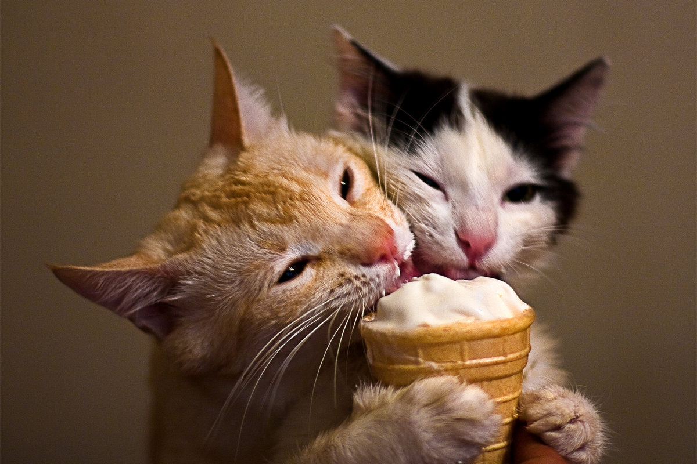

Мы коты!
Мяу... Мир глазами кошек
Что мы любим?
Сон
Даже самые активные котики обожают вздремнуть, а о пушистых ленивцах и говорить не приходится. Нам нравится видеть сладкие сны, пока весь мир вокруг них суетится.
Некоторые котики спят до 16 часов в день! Лучше не трогать спящего питомца, ведь котам действительно полезно дремать в любом возрасте.
Царапки
Все обладатели коготков не против подточить их о диваны или ближайшую стену. Во многих случаях коты помечают таким образом свою территорию, поэтому не удивляйтесь, если застанете питомца за обдиранием обоев.
Самый идеальный вариант – обзавестись когтеточкой, которая поможет коту делать себе «маникюр», ну а вам сохранит имущество!
Ласки, но не слишком часто
Как и людей, у котиков бывает настроение, когда они хотят понежиться в объятиях своих хозяев. Им важно внимание, и они нередко просят его сами.
Тем не менее, бывают случаи, когда питомец просто не в настроении и может даже поцарапать, поэтому лучше не навязывать ему свои ласки.
Кроме того, есть породы, которые больше нуждаются в тепле и внимании со стороны хозяина, а есть те, кто предпочтет держаться на расстоянии.
Угощения
Ни один котофей не откажется от вкусной еды, особенно, если не спит и не играет. Прием пищи – это целый ритуал, который приносит животному удовольствие, поэтому стоит обязательно разнообразить рацион питомца новыми блюдами.
Может так оказаться, что к некоторым продуктам у него особая любовь, причем это не только рыба, но и даже фрукты с овощами!
Любовь

Возможно, внешне котики кажутся независимыми и гордыми, но почти все они очень любят своих хозяев и нуждаются в том, чтобы вместе проводить время. Неважно, что вы делаете: готовите еду или смотрите телевизор, питомец может ощутить потребность в вашем внимании.
Котики по-разному проявляют свою любовь – ластятся, кладут голову на ваши колени и даже пытаются лизнуть щеку, забираясь на плечи. Они просто любят вас, а разве это не самое главное?